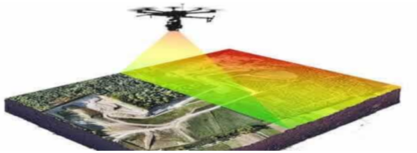
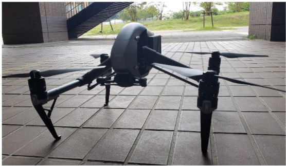

INTRODUCTION
In recent years drone and LIDAR technology have advanced to the point of threatening to completely overtake aero
photogrammetry. However there are still some factors that have hampered the process of the construction industry
fully
embracing this new technology with perhaps the most critical being the current price tag and the technical
expertise
required for the maintenance that accompanies long-range LIDAR equipment.
The purpose of our research is to tackle these problems, both economic and technical, by offering a third
alternative
for site surveying with the use of a SLAM equipped drone that applies multiple depth cameras both expanding and
strengthening the field that the drone could map, obtaining an accurate survey of a site, with the final goal of
integrating FPV (first-person view) capabilities and MIXED REALITY applications to the drone making it possible
to
virtually project structures into the real world overlapping the live feed from the drone and visualize them
using VR
googles.

We believe that it will be possible to make a prototype that could become a viable alternative with capabilities
of
precise scanning and through the aid of simultaneous photography apply an AI module for semantic segmentation
that will
label the elements in a site such as trees, terrain materials, and existing buildings and input this information
so that
a more accurate 3d reconstruction can be made.
The “SLAM UAV drone” will then interpret the data from geo-positional information combining it with mapped data
and the
labeling component, to produce a virtual 3-dimensional representation of the site in a process guided towards
predicting
a theoretical ideal placing of a building, on the targeted site, using a multi-objective optimization process
powered by
the AI module holding the understanding of the components of the site and processed on the onboard computer
attached to
the drone.
This drone prototype and the software that will accompany this equipment could theoretically enable any
architect or
design team to first accurately survey a site and process the data into a functional virtual twin so that on the
following flight, of the drone overlooking the site, it would be possible to simulate a new planned structure or
building on the site and in real-time see it, through the drone camera, from any desired height and angle
contributing
greatly to the understanding of the impact of said structure on a context obtaining new insights for further
refining
its design. In other words, this application can be used in the exploratory design phases as well as to present
the
final design to a client.
“SLAM UAV drone” is a prototype created by a team led by professor Diego Thomas from the Information Science department at Kyushu University and jointly being developed with the aid of a team from the Architectural lighting laboratory led by Professor Yasuko Koga from the Environmental Engineering department at Kyushu University.
COMPARISON OF ANALYSIS BETWEEN LIDAR, PHOTOGRAMMETRY, AND SLAM UAV DRONE
To accurately measure the potential of a SLAM UAV drone prototype it was decided that a practical approach would be to judge the results based on the comparison with the data obtained from surveying a target site using ground Lidar and aero photogrammetry, the most common and available methods in the market. This comparison will then be interpreted ideally in the form of a measurable deviation that will allow to more accurately pinpoint where would this prototype be allocated when compared to these two methodologies in terms of several factors such as accuracy, time constraint, economical value, among others to be decided. The initial site chosen for our tests will be near the west 2 building on campus and it would be the location that we are targeting for survey using the ground-level equipment as well as photogrammetry using PIX4D mapper.

EXPECTED CONCLUSIONS AND OUTCOME
-
To innovate the aerial-based survey process using SLAM technology proving that this approach brings benefits and cost-effective solutions, even increasing the value on projects.
-
To show a working prototype capable of generating accurate site surveys recreating a logical and realistic spatial construct so that they can be useful for the development of a project.
-
To create a process capable of not only incorporating site survey data but including AR to show a future building simulated in real-time on the site.
RESEARCH DEMONSTRATION VIDEOS